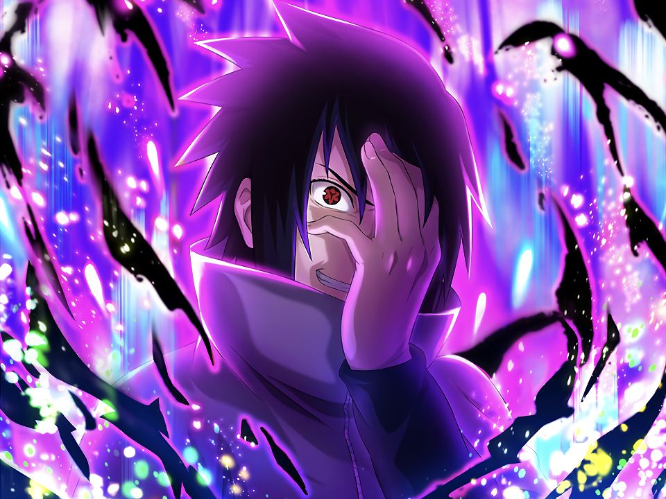

Naruto Uzumaki
From Genin to Seventh Hokage and everything in between.

About the Hero of the Fourth Great Shinobi War
From the Uzumaki and Namikaze clans, Naruto's mother and father were Minato Namikaze and Kushina Uzumaki. After events happened at the time of his birth both his father and mother died and he was made the jinchuriki of the nine-tailed fox named Kurama. He fought many battles and mastered many abilities culminating in his victory in the war alongside Sasuke Uchiha. He would later go on to succeed his old teacher Kakashi Hatake as Hokage or leader of the village.
Notable Abilities
- Shadow Clone Jutsu - A high level jutsu allowing him to create clones of himself using shadows.
- Rasengan - His signature jutsu in which he compresses his chakra and rotates it at high speed to devastating effect. Many different variations of it.
- Sage Mode - Taught this by the toads of Mt. Myoboku. He is able to focus and channel the energy of nature to become chakra for himself which he uses to enhance his physical and perceptive abilities.
- Kyuubi Mode - He becomes one with the nine-tailed fox within him using its chakra to grant him god-like characterics and abilities.